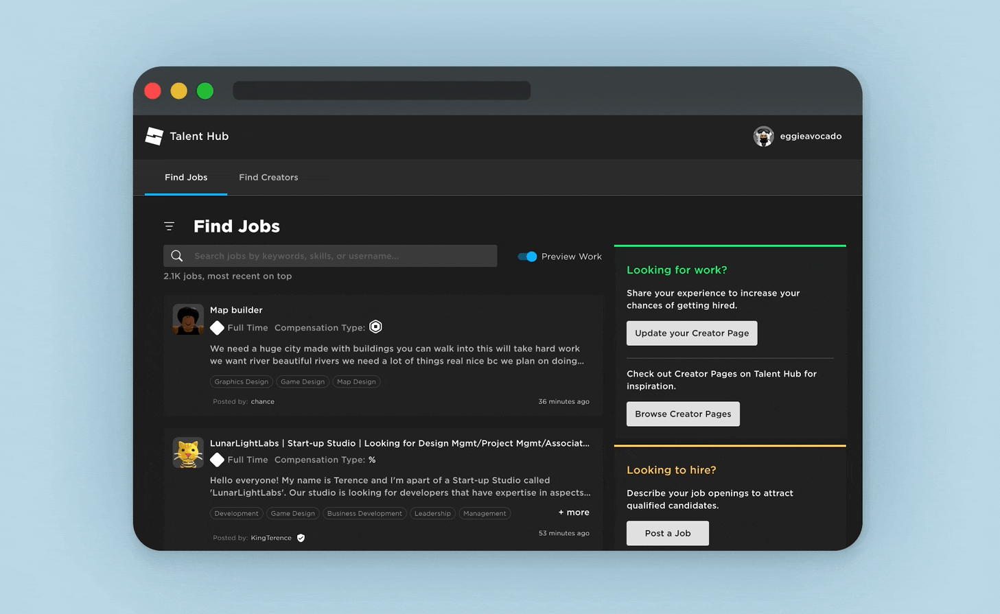
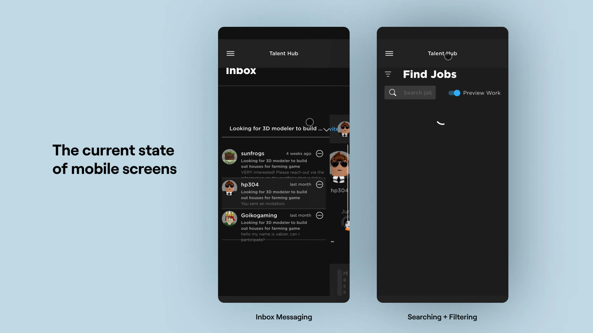
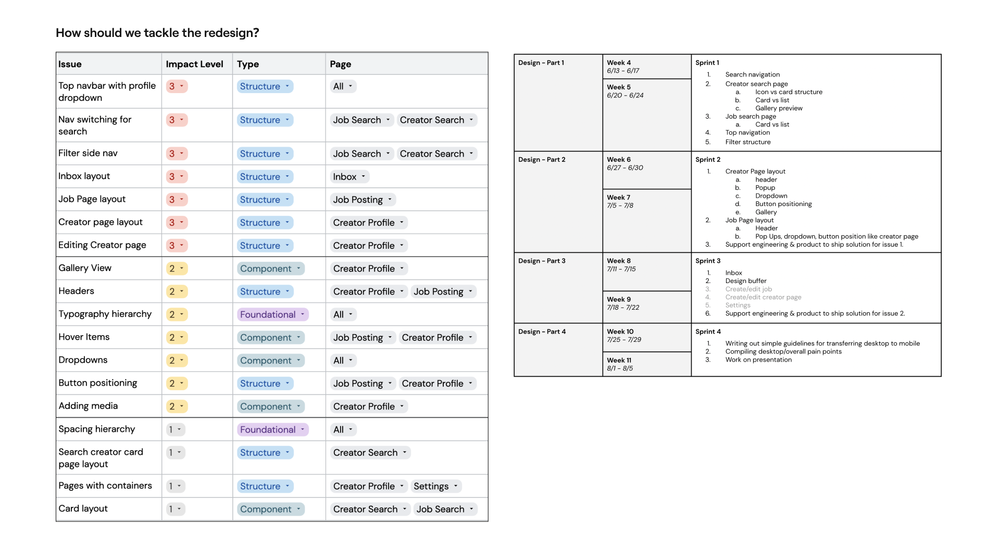
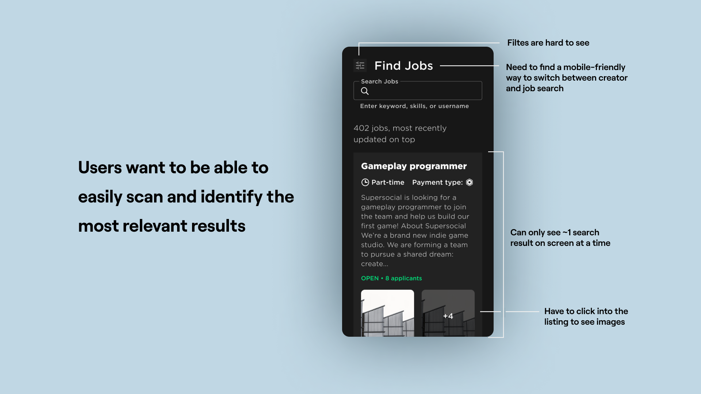
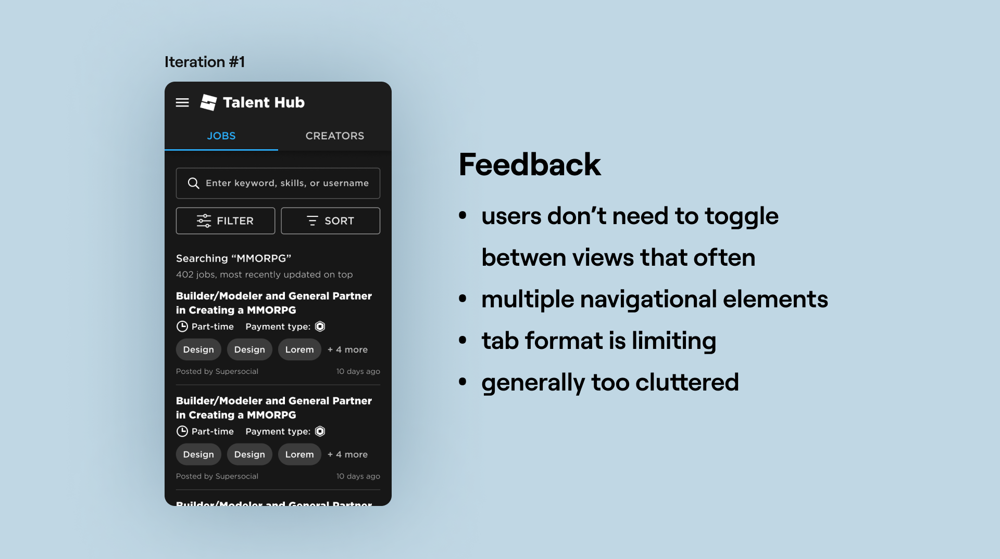
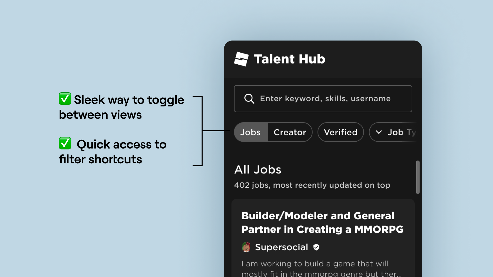

Context
What is Talent Hub?
Talent Hub has two main user flows:
- users can search for job postings that they want apply to
- users looking to hire can also directly search for creator profiles that they may want to reach out to
The platform also has an inbox where all applications and messages are sent.

Talent Hub is a browser based platform launched by Roblox in 2019.
The Problem
Mobile was Unusable
When the product launched, mobile was not supported. However, creators cited that the mobile state of Talent Hub was one of the top reasons they did not use the platform.

The pages were built for desktop and did not function on mobile.
Timeline and Metrics
Setting up for Success
In order to complete a near-full redesign in three months, I had to come up with a realistic timeline that covered all the most important bases. I sorted the pages by severity and importance, then created a sprint-based timeline.
The last step before I could start designing was making sure we can measure the success of the designs. By working with product and data science to we were able to implement metrics that would track usage and retention on mobile.

I had four sprints to tackle all the issues I had identified.
Sprint One
Searching and Filtering
For the first pass, I kept the functionality the same and merely scaled down the UI to fit mobile screens. This way, I could look past the superficial engineering bugs and begin identifying UX pain points.

Identifying pain points.
In particular, I had trouble figuring how to allow users to toggle between Creator Search and Job Search.
My first instinct was to use a tab bar. However, I realized that users didn't need to switch views often and that this design wasn't able to accomodate for more categories. After some valuable feedback, I went back to the drawing board for alternative solutions.

Iterate, iterate, and iterate some more!
To solve this problem, I realized we could bring this element from a navigational element down to a filter-level toggle.

An aha moment!
Final Redesign
Homepage Prototype
After some internal user testing I was able to validate some design decisions and had a working hifi prototype to give engineering!
Next Step
Repeating the Process
Below is a brief overview of some of other pages I redesigned as well. I was able to redesign all of the major pages during the three months!
Sprint Two
Applying to a Job
Since job postings tend to be text heavy, I focused on readability and easy access to action buttons to avoid unecessary scrolling.
Sprint Three
Inbox Flow
Inbox had many different states and needed to be able to cater well to applicants and employers.
Conclusion
Challenges
- I had to balance optimizing for mobile and straying too far from desktop
- Inherited UX problems from desktop
- Work with a design system not meant for mobile screen sizes
Learnings
- Keep all stakeholders updated! A quick sync can save weeks of work/misunderstanding
- How to design to scale
- Advocate for design changes even if it was not in the original scope